基于CD4017的简易密码器控制装置¶
设计目的¶
- 了解和掌握 CD4017 十进制计数器/分频器 的工作原理。
- 了解和掌握 CD4511 LED 显示驱动芯片 的工作原理。
- 了解和掌握 CD4060 分频器 的工作原理。
- 了解和掌握 NE555 多功能定时器芯片 的工作原理及其电路搭建方法。
- 实现一个基于 CD4017 的简易密码锁，完成校电子设计大赛的赛题要求。
设计原理¶
CD4017是一个十进制计数器，它有十个输出端口，每收到一个时钟信号就会逐一切换到下一个输出端口。在密码锁设计中，我们可以利用这一特性实现对正确密码序列的检测。当输入的密码序列正确时，会使CD4017计数到指定的状态，从而触发开锁机制。
当开锁机制被触发后，通过电路设计使能CD4060芯片产生一个1Hz的方波信号，CD4060包含一个14级的二进制纹波计数器，可以将输入的时钟信号分频，从而产生较低频率的输出信号，在电路中使用RC振荡器来进行时钟输入的生成。
74HC192芯片对输入的1Hz信号进行向上计数，并通过QA、QB、QC、QD引脚（四个引脚分别代表计数器的每一位）进行计数输出。
CD4511收到来自74HC192的计数信号后，进行显示编码，驱动数码管进行显示，从而实现读秒功能。
当开锁机制被触发后，开锁信号通过三极管进行放大，驱动继电器吸合，使能NE555芯片工作。NE555工作在非稳态模式下，通过计算定时器的电容和电阻值，输出一个2Hz的方波信号，驱动LED闪烁。
当数码管从0-7读秒结束后，通过电路设计使密码输入部分、计数部分电路复位，数码管持续显示数字“0”，断开继电器，是发光二极管熄灭。
实验器材与芯片介绍¶
实验器材¶
| 类别 | 器件 |
|---|---|
| 数字芯片 | CD4017、74HC192、CD4060、CD4511、74HC00（NAND门） |
| 定时器 | NE555 |
| 输入设备 | 轻触按键（S1–S4）、自锁按键 |
| 显示单元 | 共阴数码管、LED |
| 控制元件 | 三极管、继电器、二极管 |
| 被动元件 | 电阻、电容、电位器、104 消抖电容 |
| 平台 | PCB / 洞洞板、电源、接线材料 |
数字芯片介绍¶
-
CD4060
- 14级二进制纹波计数器 + 内置 RC 振荡器。
- 可通过外接 R、C 设置振荡频率，输出多路分频信号（如 Q5 ≈ 1Hz）。
- 适用于低频时钟生成。
-
74HC192
- 高速 CMOS 4 位同步十进制可逆计数器。
- 支持异步清零（RST）和同步加载。
- 本实验中用于 0–7 向上计数。
-
CD4017
- Johnson 计数器结构，10 个译码输出。
- CLK 下降沿触发，常用于顺序控制或简单状态机。
- 本实验中实现密码序列检测（预设密码：122234）。
-
CD4511
- BCD → 7 段锁存/译码/驱动器。
- 支持灯测试（LT）、消隐（BI）、锁存使能（LE）。
- 本实验中 LE 接地，实现直通显示。
-
NE555
- 经典定时器 IC，支持单稳、双稳、无稳（振荡）模式。
- 本实验采用无稳态模式，通过 R1、R2、C 计算得 f ≈ 2Hz，驱动 LED 闪烁。
设计电路图¶
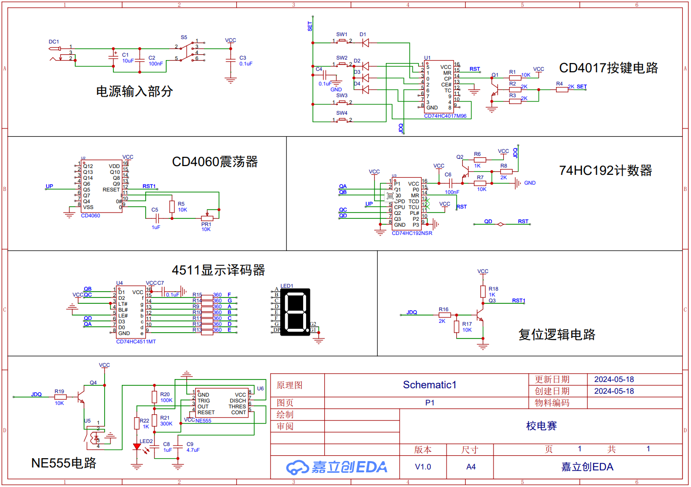
设计原理图
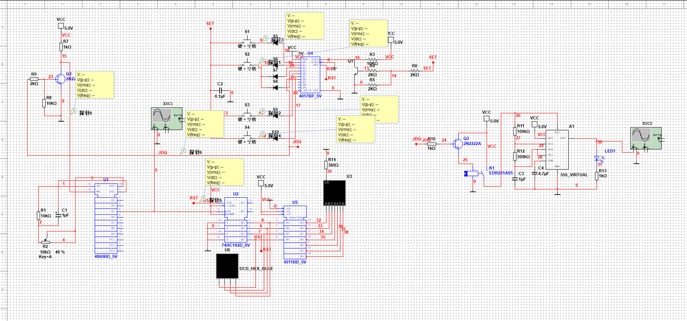
设计仿真电路图
电路设计分析¶
稳压电源电路¶
电源通过USB线，通过DC接口进入电路。S5是一个自锁开关。在这里，电容主要起到平稳电源电压的作用。
当电路的电流需求突增时，电容器可以通过释放储存的电荷来提供额外的电流，从而维持电源电压的稳定性。这样的设计有助于避免电源电压的波动对电路的影响，确保各个组件正常工作。
通过在VCC边上添加电容，可以提供一个低阻抗路径，使这些高频噪声和干扰能够通过电容器释放到地，从而减少它们对电路的影响。这有助于提高电路的稳定性和抗干扰能力。
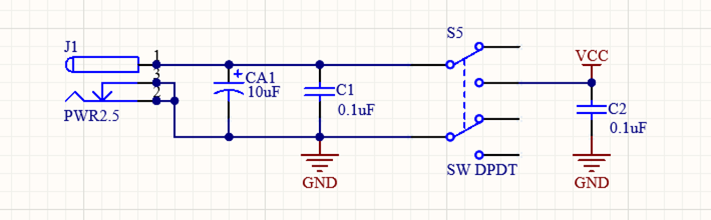
CD4017数字芯片密码逻辑¶
CD4017是一款常用的CMOS十进制计数器/分频器集成电路，它属于4000系列数字逻辑电路。这个芯片通常用于计数应用，它可以产生一系列的输出，每个输出依次为高电平。CD4017具有一个5位的Johnson计数器，可以通过外部时钟脉冲来进行计数。
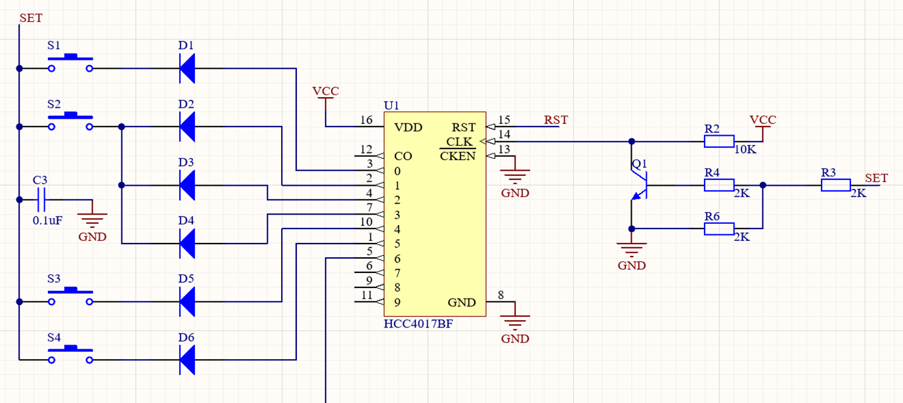
CD4017有十个输出端口，每当输入时钟脉冲到来时，CD4017会按照顺序将高电平信号从一个输出引脚切换到下一个输出引脚，实现十进制计数的功能。在达到最高的输出（9）之后，它会重新从0开始计数。
因此，CD4017被广泛应用于计数和时序控制等应用中。在密码锁设计中，我们可以利用这一特性实现对正确密码序列的检测。当输入的密码序列正确时，会使CD4017计数到指定的状态，从而触发开锁机制。
在原理图设计CD4017部分中，我们采用了四个按键，S1-S4，S1与Q0相连接，S2通过多路并联接在Q1、Q2、Q3上，S3接在Q4，S4接在Q5引脚上。通过分析CLK引脚功能和SET网络端口可得，在CD4017当前输出通道的按键按下时，SET引脚被置高电平，导通三极管Q1，使得CLK引脚产生一个下降沿。每当在CLK引脚上检测到一个下降沿时（即，电平从高变低）时，CD4017的输出就会从当前激活的输出移动到下一个输出。
由于S2按键并联在了了Q1、Q2、Q3引脚上，因此在密码输入时需要连续按下3次S2按键，在正确顺序按下按键后，下一位输出通道被激活，通过分析可得，CD4017的预设密码是122234。
当122234密码按正确时序输入后，CD4017的D6通道被激活，输出高电平信号。该通道的逻辑信号可以用于后续电路设计。104电容与按键并联的设计实现了按键部分的硬件消抖。
- 按键 S1–S4 分别对应 CD4017 的 Q0、Q1/Q2/Q3（并联）、Q4、Q5。
- 正确序列：S1（Q0）→ S2×3（Q1→Q2→Q3）→ S3（Q4）→ S4（Q5）。
- 此时 Q6 输出高电平，作为“开锁信号”。
- 每次按键通过 104 电容实现硬件消抖，避免误触发。
CD4060信号发生器¶
CD4060是一款14级二进制纹波计数器/分频器和振荡器，它使用CMOS技术制造，广泛用于时钟和定时应用。CD4060包含一个内置的振荡器电路，可以与外部电阻和电容一起使用来产生时钟信号，以及一个多级分频器，可以将输入时钟信号分频到较低的频率。
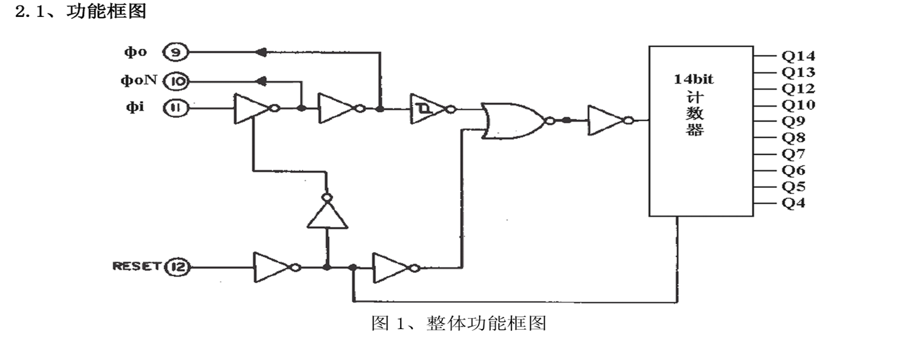
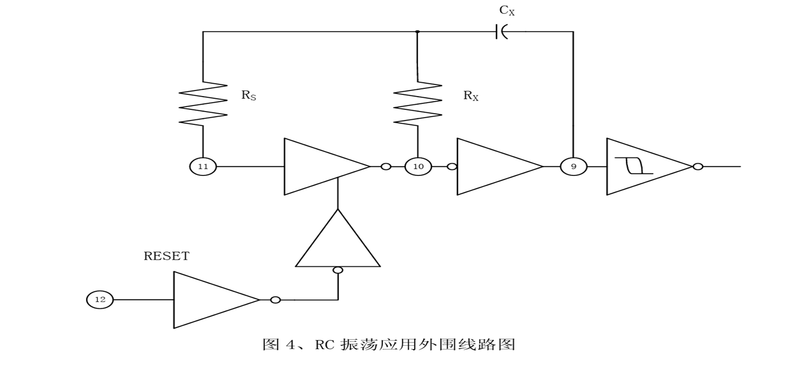
电路提供复位端口（RESET）用于复位计数器的计数值同时控制振荡器模块的开关。当复位端口为高电平时，将复位计数器（复位值0000H）并关闭振荡器。
CD4060芯片在此处充当信号发生器的作用，用来在规定的时间内产生1Hz的脉冲信号。其被开锁信号使能后，进行工作。由于CD4060内置了一个RC振荡器，可以只通过连接外部电阻（R）和电容（C）来设置振荡频率。根据实验电路所给出的条件，我们可以得知CD4060在收到开锁信号后，通过Q5引脚持续地向外输出1Hz的脉冲信号。
74HC192十进制计数器¶
74HC192 是一款高速 CMOS 4位同步可预置十进制计数器，属于74系列逻辑集成电路。它具有同步操作的特点，意味着所有的内部触发器都在同一时钟信号的控制下同时更新状态，这样可以避免异步计数器中可能出现的竞争条件。每当时钟输入（CLK）接收到上升沿时，计数器会增加一个计数值。
74HC192信号的UP引脚接收来自的CD4060的脉冲信号，使192计数器进行持续递增，QA、QB、QC、QD四个输出引脚分别对应192计数器的各个位数（如：0110代表6，表示已经接收到了6个脉冲）。
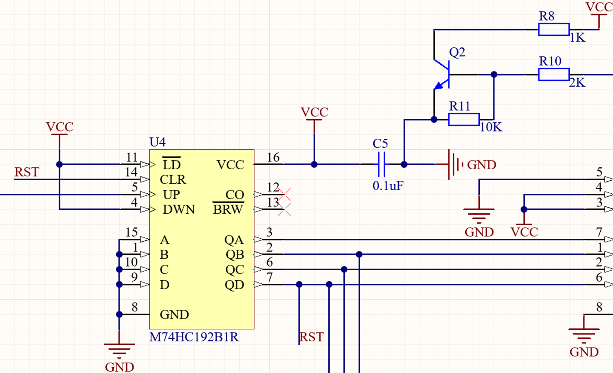
CD4511显示译码器¶
CD4511是一款BCD至7段锁存器/解码器/驱动器，它可以将4位二进制编码的十进制数（BCD）转换为控制7段LED或LCD显示器的信号。CD4511常用于数字显示应用，如数字时钟、计数器、测量仪器等。
来自前端电路74HC192的四个引脚的输出信号被传递到CD4511芯片上，CD4511芯片的LE引脚置为低电平，使得输入的BCD输入直接传递到输出。4511芯片进行LED显示编码，驱动数码管进行数字显示。
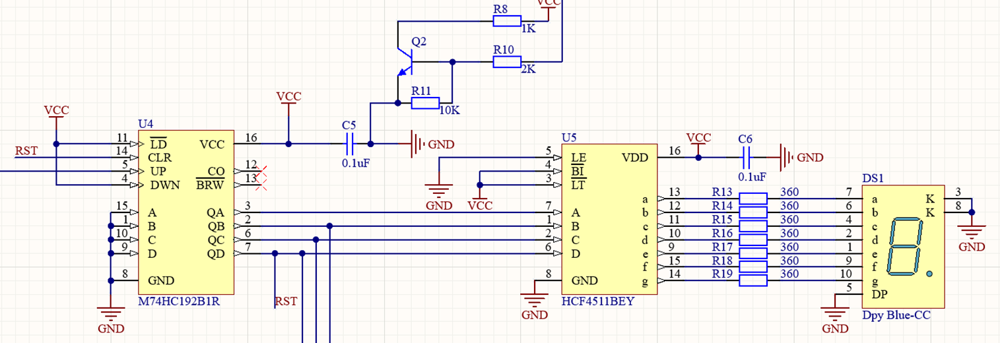
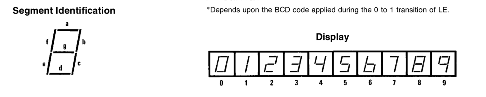
CD4060/74HC192/CD4511联动工作¶
由上述分析可知，当开锁信号被触发后，CD4060每秒将产生一个脉冲，脉冲个数被192芯片进行计数，通过4511芯片编码后进行数码管数字显示，每一个脉冲都会使数码管显示数字递增。

电路设计要求数码管从0-7进行递增显示，在第八秒时进行系统的复位。分析可得，第八个脉冲到来时，192芯片将输出1000（8），QD引脚输出高电平。所以我们可以将该引脚信号作为整个密码锁电路的复位信号。

QD复位信号通过硬件电路复位了4017芯片，初始化了4017芯片的输出通道，为下一次输入密码做准备。4017的Q3引脚直接连接192芯片的RST引脚，在读秒过程中，Q3持续为低电平，计数器正常工作，而在读秒结束后为高电平，清零计数器。若4060芯片仍然产生脉冲，计数器仍会计数，即数码管会持续读秒，不符合设计要求，因此，我们需要关闭4060芯片的脉冲输出。在电路实现上，复位信号复位了4017芯片，使得D6（开锁信号输出引脚）输出被重置成了低电平，经由三极管逻辑电路，使CD4060芯片停止工作。
- 开锁信号使能 CD4060，Q5 输出 1Hz 脉冲 → 74HC192 计数。
- CD4511 驱动数码管实时显示计数值。
- 当计数 = 8（BCD: 1000），QD = 1，触发复位：
- 74HC192 清零；
- CD4017 复位（MR 引脚置高）；
- 开锁信号消失 → CD4060 停振、继电器断开、NE555 断电。
NE555定时器¶
NE555是一款非常流行的定时器集成电路，由Signetics公司（现在的恩智浦NXP）在1971年推出。它被广泛应用于各种电子电路中，用于产生精确的时间延迟或振荡。NE555因其多功能性、稳定性和易于使用而受到工程师和爱好者的喜爱。在我们的电路设计中采用了NE555芯片的非稳态模式，也称为自由运行模式，用于产生连续的方波振荡。在这种模式下，NE555不依赖于外部触发，而是通过外部电阻和电容的组合来设定振荡频率和占空比。
 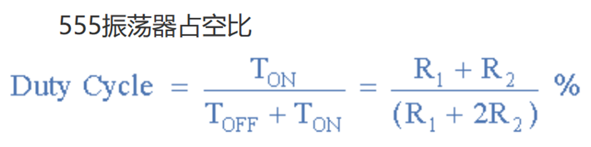
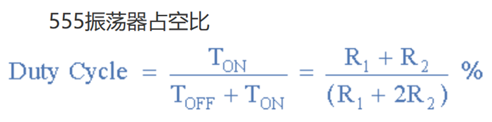
正确输入密码后，开锁信号通过导通三极管，进而驱动继电器，接通了NE555方波发生器的VCC引脚，使NE555震荡电路进行工作。
通过配置NE555电路的电阻电容值，使得NE555产生2Hz的方波信号，驱动LED进行闪烁。当复位信号产生后，CD4017被初始化，开锁信号4017芯片的D6引脚随之变为低电平，继电器断开，NE555不工作，LED停止闪烁。
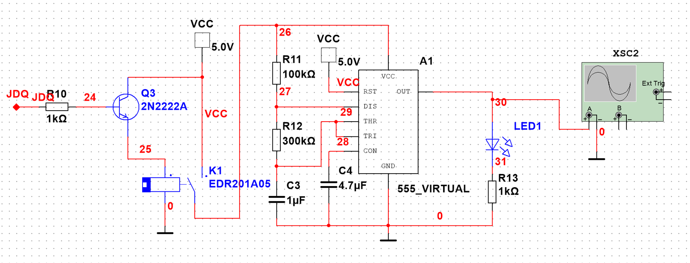
- 开锁信号 → 三极管导通 → 继电器线圈得电 → 常开触点闭合 → NE555 VCC 接通。
- NE555 输出 2Hz 方波 → LED 闪烁。
- 复位后，整个控制链路切断，系统回归待机状态。
实操步骤¶
- 根据原理图在洞洞板上焊接主控电路（CD4017 + 按键输入）。
- 搭建 CD4060 + 74HC192 + CD4511 + 数码管 显示模块。
- 设计并焊接 NE555 振荡电路与继电器驱动电路。
- 使用仿真软件验证逻辑正确性，调整接线。
- 测试各按键是否能正确触发 CD4017 计数（注意硬件消抖）。
- 输入正确密码 122234，观察：
- 数码管从 0 到 7 递增；
- LED 以 2Hz 闪烁；
- 继电器吸合。
- 第 8 秒（计数=8）时，观察系统是否自动复位：
- 数码管归“0”；
- LED 熄灭；
- 继电器释放。
- 尝试错误密码（如 1234、1223 等），确认系统不响应。
实验现象¶
当输入正确密码序列（122234）时，CD4060产生1Hz脉冲信号，数码管显示数字“0“-”7” ，第8秒时密码输入部分电路、计数部分电路复位，数码管持续地显示数字“0”，CD4060停止输出脉冲信号，直到下一次输入正确密码。
当输入正确密码后，继电器吸合，8秒后，自动断开。
当输入正确密码后，NE555输出2Hz方波信号驱动发光二极管闪烁，8秒后发光二极管熄灭。
当输入错误的密码序列时，CD4017不会到达预设状态，继电器/LED不会工作数码管持续显示数字“0“”。
| 输入情况 | 现象 |
|---|---|
| 正确密码（122234） | - 数码管显示 0→7 - LED 以 2Hz 闪烁 - 继电器吸合 - 第 8 秒后自动复位，数码管保持“0”，LED 熄灭 |
| 错误密码 | - 数码管始终显示“0” - LED 不亮 - 继电器不动作 |

实物图正面
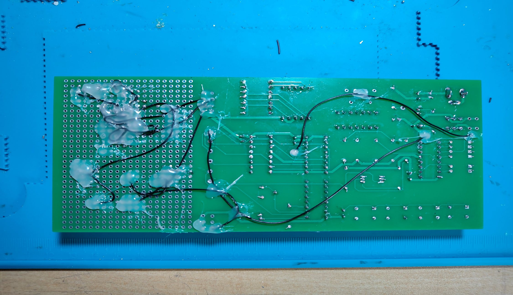
实物图背面
演示视频：
设计结论¶
- CD4017 可有效实现简易密码锁的状态识别功能，结构简单、成本低廉。
- 多芯片协同工作（计数、分频、显示、定时、驱动）体现了数字系统设计的集成思想。
- 通过合理设计复位逻辑，实现了“一次性开锁 + 自动恢复”的闭环控制。
- 本设计成功完成了校电子设计竞赛的基本功能要求，具备良好的可扩展性。
建议与改进¶
- 可以通过增加更多的CD4017芯片来扩展密码长度，提高安全性。
- 组合使用其他逻辑门可以设计出更复杂的密码验证逻辑。
- 为了防止密码被破解，可以增加输入错误密码时的延时锁定机制等。
评论